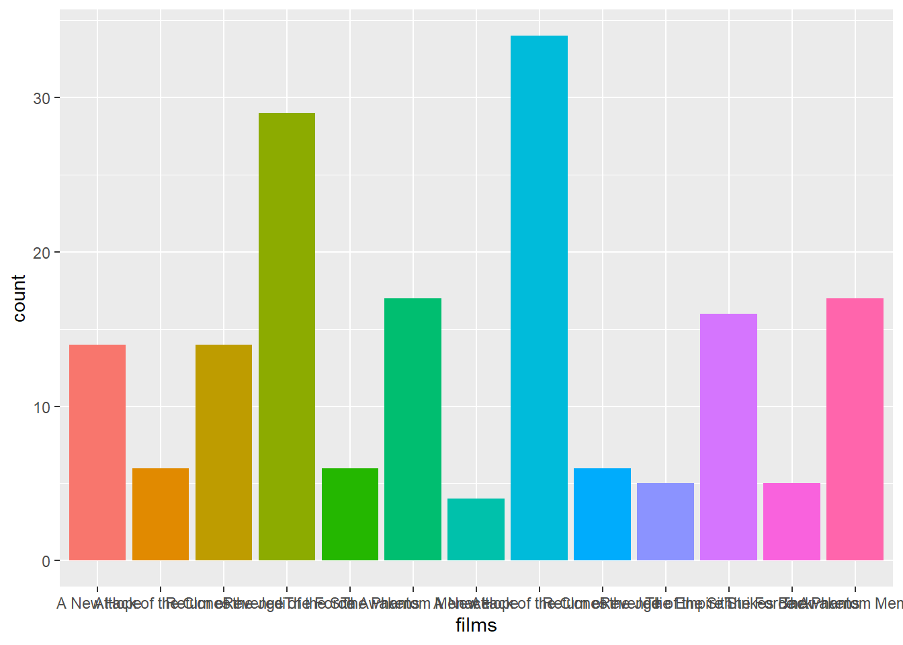

# A tibble: 3 × 3
country `1999` `2000`
<chr> <dbl> <dbl>
1 Afghanistan 745 2666
2 Brazil 37737 80488
3 China 212258 213766Manipulación de tablas
Tidy data
Al principio del curso aprendimos un poco sobre la filosofía Tidy y como se aplica en la construcción y análisis de datos tabulados.
Es posible representar los mismo datos en diversas maneras. Como ejemplo, se muestra a continuación la misma información organizada de manera diferente. Cada set de datos muestra el mismo valor de cuatro variables: country, year, population cases, pero cada set esta organizado de manera diferente
| country | year | cases | population |
|---|---|---|---|
| Afghanistan | 1999 | 745 | 19987071 |
| Afghanistan | 2000 | 2666 | 20595360 |
| Brazil | 1999 | 37737 | 172006362 |
| Brazil | 2000 | 80488 | 174504898 |
| China | 1999 | 212258 | 1272915272 |
| China | 2000 | 213766 | 1280428583 |
| country | year | type | count |
|---|---|---|---|
| Afghanistan | 1999 | cases | 745 |
| Afghanistan | 1999 | population | 19987071 |
| Afghanistan | 2000 | cases | 2666 |
| Afghanistan | 2000 | population | 20595360 |
| Brazil | 1999 | cases | 37737 |
| Brazil | 1999 | population | 172006362 |
| Brazil | 2000 | cases | 80488 |
| Brazil | 2000 | population | 174504898 |
| China | 1999 | cases | 212258 |
| China | 1999 | population | 1272915272 |
| China | 2000 | cases | 213766 |
| China | 2000 | population | 1280428583 |
| country | 1999 | 2000 |
|---|---|---|
| Afghanistan | 745 | 2666 |
| Brazil | 37737 | 80488 |
| China | 212258 | 213766 |
| country | 1999 | 2000 |
|---|---|---|
| Afghanistan | 19987071 | 20595360 |
| Brazil | 172006362 | 174504898 |
| China | 1272915272 | 1280428583 |
Las cuatro tablas anteriores son representaciones del mismo set de datos, pero no son igual fáciles de trabajar con ellas. Solamente una de ellas podemos decir que se considera como “Tidy” y será mucho mas fácil de trabajar. Por ejemplo, para calcular el promedio de casos por país y por año, o por ejemplo para calcular una nueva variable a partir del número de casos por tamaño poblacional.
Hay tres reglas interrelacionadas que hacen un set de datos limpio:
- Cada variable tiene su propia columna
- Cada observación tiene su propia fila
- cada valor tiene su propia celda

Bajo este contexto, la tabla 1 es la única que cumple con la característica de una variable por columna.
Pivot!!!

A pesar de los beneficios del formato Tidy, en realidad la mayoría de los datos con los que trabajamos cotidianamente no estan en este formato, ya que muchas veces se están organizados en una forma que facilite lo mas posible la captura de cada dato.
Para arreglar estos problemas en el formato de los datos tabulados, vamos a necesitar de dos de las funciones mas importante de tidyr: pivot_longer() y pivot_wider()
pivot_longer()
La tabla4a muestra una situación muy común en la que las columnas no son nombres de variables; es decir, las columnas 1999 y 2000representan valores de la variable año, y los valores en las columas 1999y 2000representan valores de la variable casos. Cada fila representa dos observaciones y no una.
Para ajustar este set de datos a un formato mas adecuado, necesitamos tres parámetros:
El set de columnas cuyo nombre son valores y no variables; en este caso, las columnas son
1999y2000.El nombre de la variable donde se moverán las columnas. En este caso sería
yearEl nombre de la variable de la columna con los valores. En este caso sería
cases.

table4b %>%
pivot_longer(c(`1999`, `2000`), names_to = "year", values_to = "population")# A tibble: 6 × 3
country year population
<chr> <chr> <dbl>
1 Afghanistan 1999 19987071
2 Afghanistan 2000 20595360
3 Brazil 1999 172006362
4 Brazil 2000 174504898
5 China 1999 1272915272
6 China 2000 1280428583# alternativamente
table4a %>%
pivot_longer(-country, names_to = "year", values_to = "population")# A tibble: 6 × 3
country year population
<chr> <chr> <dbl>
1 Afghanistan 1999 745
2 Afghanistan 2000 2666
3 Brazil 1999 37737
4 Brazil 2000 80488
5 China 1999 212258
6 China 2000 213766pivot_wider()
pivot_wider() es lo opuesto de pivot_longer(). Se utiliza cuando las observaciones están dispersas en varias filas. table2 constituye un ejemplo de esto: una observación es un país en un año, pero cada observación esta dispersa en dos filas.
table2# A tibble: 12 × 4
country year type count
<chr> <dbl> <chr> <dbl>
1 Afghanistan 1999 cases 745
2 Afghanistan 1999 population 19987071
3 Afghanistan 2000 cases 2666
4 Afghanistan 2000 population 20595360
5 Brazil 1999 cases 37737
6 Brazil 1999 population 172006362
7 Brazil 2000 cases 80488
8 Brazil 2000 population 174504898
9 China 1999 cases 212258
10 China 1999 population 1272915272
11 China 2000 cases 213766
12 China 2000 population 1280428583Para ajustar la tabla2, necesitamos solo dos parámetros:
La columna de donde se obtendrá el nombre de las variables. En este caso es
typeLa columna de donde se obtendrán los valores. En este caso es
count.

table2 %>%
pivot_wider(names_from = type, values_from = count)# A tibble: 6 × 4
country year cases population
<chr> <dbl> <dbl> <dbl>
1 Afghanistan 1999 745 19987071
2 Afghanistan 2000 2666 20595360
3 Brazil 1999 37737 172006362
4 Brazil 2000 80488 174504898
5 China 1999 212258 1272915272
6 China 2000 213766 1280428583
Tip
Para importar una base de datos que se encuentra en un sitio remoto, simplemente puedes ingresar la ruta (http:www//…) entre comillas dentro de la función para importar los datos (p. ej read_csv()).
www <- "https://raw.githubusercontent.com/trippv/Miguel_Tripp/master/respiracion.csv"
df <- read_csv(www)Unir tablas (_join())
Dentro de los análisis, es muy común que tengamos que unir dos o mas tablas distintas que se relacionen entre ellas por uno o mas elementos en común. Por ejemplo, podemos unir una lista de genes expresados diferencialmente en un análisis transcriptómico con sus valores de abundancia, los cuales se encuentran en objetos diferentes. O podemos unir información de grupos taxonómicos que se encuentren en objetivos diferentes y que se unan por el nombre o identificador de una especie.
Dplyr tiene diversas herramientas para unir tablas. Entre las funciones mas comunes tenemos:
inner_join(): Esta función combina dos tablas (data frames) manteniendo solo las filas que tienen una coincidencia en ambas tablas en función de las columnas especificadas. Las filas que no tienen coincidencias en ambas tablas se descartan del resultado final.left_join(): Une dos tablas conservando todas las filas de la tabla izquierda y las filas coincidentes de la tabla derecha. Si una fila de la tabla izquierda no tiene una coincidencia en la tabla derecha, se llenará con valores NA (missing values) en las columnas de la tabla derecha.right_join(): Es similar a left_join, pero conserva todas las filas de la tabla derecha y las filas coincidentes de la tabla izquierda. Las filas de la tabla derecha que no tienen una coincidencia en la tabla izquierda se llenan con valores NA en las columnas de la tabla izquierda.full_join(): Esta función une dos tablas manteniendo todas las filas de ambas tablas. Si una fila tiene una coincidencia en la otra tabla, se incluirá en el resultado final. Si no hay una coincidencia para una fila en alguna de las tablas, se llenarán las columnas correspondientes con valores NA en el resultado final.

veamos algunos ejemplo. Para esto vamos a importar unas cuantas tablas que se encuentran precargadas con el paquete dplyr
band_members# A tibble: 3 × 2
name band
<chr> <chr>
1 Mick Stones
2 John Beatles
3 Paul Beatlesband_instruments# A tibble: 3 × 2
name plays
<chr> <chr>
1 John guitar
2 Paul bass
3 Keith guitar
¿cual es la columna en común entre ambas tablas?
left_join()
Cuando se utiliza left_join() unión dentro de un pipe, la tabla que ingresamos desde arriba esta del lado derecho, mientras que la tabla que vamos unir esta del lado izquierdo.
El argumento by = le dice a la función cual es la variable en común que se va a utilizar en la unión.
band_members %>%
left_join(band_instruments, by = "name")# A tibble: 3 × 3
name band plays
<chr> <chr> <chr>
1 Mick Stones <NA>
2 John Beatles guitar
3 Paul Beatles bass band_instruments %>%
left_join(band_members, by = "name")# A tibble: 3 × 3
name plays band
<chr> <chr> <chr>
1 John guitar Beatles
2 Paul bass Beatles
3 Keith guitar <NA> Observa que cuando no hay coincidencia en alguna de las celdas de la izquierda, se llenara el espacio con NA
rigth_join()
Cuando se utiliza rigth_join() unión dentro de un pipe, la tabla que ingresamos desde arriba esta del lado izquierdo, mientras que la tabla que vamos unir esta del lado derecho.
band_members %>%
right_join(band_instruments, by = "name")# A tibble: 3 × 3
name band plays
<chr> <chr> <chr>
1 John Beatles guitar
2 Paul Beatles bass
3 Keith <NA> guitarfull_join()
full_join() retiene todas las filas en ambas tablas e inserta NAcuando existan registros faltantes que alguna de ellas.
the full_join functions retains all rows of both input data sets and inserts NA when an ID is missing in one of the data frames.
band_members %>%
full_join(band_instruments, by = "name")# A tibble: 4 × 3
name band plays
<chr> <chr> <chr>
1 Mick Stones <NA>
2 John Beatles guitar
3 Paul Beatles bass
4 Keith <NA> guitarinner_join()
band_members %>%
inner_join(band_instruments , by = "name")# A tibble: 2 × 3
name band plays
<chr> <chr> <chr>
1 John Beatles guitar
2 Paul Beatles bass
Warning
Es importante que estes conciente de la función que vas a utilizar y cual es el objetivo, ya que inner_join()podria resultar en la perdida inadvertida de información.
Filtrar uniones
Hasta ahora hemos examinado uniones que modifican la primera tabla agregando columnas de la segunda tabla. Por otro lado están las uniones de filtrado. Estas funcionan de manera ligeramente diferente en el sentido de que las columnas de la primera tabla permanecen sin cambios y no se agregan nuevas. La unión se utiliza más como una forma de filtrar datos, es decir, eliminar filas según cómo se relacionen con otra tabla.
Entre estas opciones tenemos:
semi_join()anti_join()
band_members %>%
semi_join(band_instruments)Joining with `by = join_by(name)`# A tibble: 2 × 2
name band
<chr> <chr>
1 John Beatles
2 Paul Beatlesband_members %>%
anti_join(band_instruments)Joining with `by = join_by(name)`# A tibble: 1 × 2
name band
<chr> <chr>
1 Mick Stones
Tip
Cuando la variable en común en ambas tablas no tienen la misma etiqueta es necesario especificar un vector de caracteres de tipo by = c("a" = "b"). Esto hara una unión de la variable aen la tabla x con la variable b de la tabla y. La variable de x será utilizada como el resultado.
Separar y unir columnas; separate() y unite()
Al principio de esta lección vimos algunos diferentes formatos de datos tabulares y aprendimos como “limpiar” algunos de ellos. Sin embargo, el caso de la tabla 3 (table3) es diferente ya que tenemos dos variables (cases y population) en una sola columna (rate).
table3# A tibble: 6 × 3
country year rate
<chr> <dbl> <chr>
1 Afghanistan 1999 745/19987071
2 Afghanistan 2000 2666/20595360
3 Brazil 1999 37737/172006362
4 Brazil 2000 80488/174504898
5 China 1999 212258/1272915272
6 China 2000 213766/1280428583Para modificar esta columna podemos utilizar la función separate(). Esta función separa una columna en múltiples columnas a partir de un carácter.
table3 %>%
separate(rate, into = c("cases", "population"), sep = "/")# A tibble: 6 × 4
country year cases population
<chr> <dbl> <chr> <chr>
1 Afghanistan 1999 745 19987071
2 Afghanistan 2000 2666 20595360
3 Brazil 1999 37737 172006362
4 Brazil 2000 80488 174504898
5 China 1999 212258 1272915272
6 China 2000 213766 1280428583
Warning
¿Que problema observas con el tipo de variables que se generaron?
Por default, separate() devuelve variables del mismo tipo que la original, que en este caso son caracteres. En este ejemplo en particular, este comportamiento no es el mas conveniente, ya que en realidad se tratan de variables numéricas. Para evitar este comportamiento se puede usar el parámetro convert = TRUE
table3 %>%
separate(rate, into = c("cases", "population"), sep = "/", convert = TRUE)# A tibble: 6 × 4
country year cases population
<chr> <dbl> <int> <int>
1 Afghanistan 1999 745 19987071
2 Afghanistan 2000 2666 20595360
3 Brazil 1999 37737 172006362
4 Brazil 2000 80488 174504898
5 China 1999 212258 1272915272
6 China 2000 213766 1280428583De igual manera, separate() elimina la columna que estamos separando pero si queremos conservarla, podemos utilizar el parámetro remove = FALSE como se muestra en el siguiente ejemplo:
table3 |>
separate(rate, into = c("cases", "population"),
sep = "/",
convert = TRUE,
remove = FALSE)# A tibble: 6 × 5
country year rate cases population
<chr> <dbl> <chr> <int> <int>
1 Afghanistan 1999 745/19987071 745 19987071
2 Afghanistan 2000 2666/20595360 2666 20595360
3 Brazil 1999 37737/172006362 37737 172006362
4 Brazil 2000 80488/174504898 80488 174504898
5 China 1999 212258/1272915272 212258 1272915272
6 China 2000 213766/1280428583 213766 1280428583La función unite() tiene el comportamiento opuesto y permite unir dos variables ubicadas en dos columnas en una sola. Por ejemplo, si queremos convertir table1 a un formato similar a table3
table1 |>
unite(rate, cases, population,sep = "/")# A tibble: 6 × 3
country year rate
<chr> <dbl> <chr>
1 Afghanistan 1999 745/19987071
2 Afghanistan 2000 2666/20595360
3 Brazil 1999 37737/172006362
4 Brazil 2000 80488/174504898
5 China 1999 212258/1272915272
6 China 2000 213766/1280428583Separar y unir filas; separate_rows()
Hay ocasiones en las que una variable tiene varios elementos agrupados en una misma celda. Toma por ejemplo en la tabla starwars que hemos utilizado a lo largo del curso.
starwars <- read_csv("data/starwars.csv")La columna films contiene las películas en las que ha aparecido cada personaje, separados con una coma. Para poder separar cada uno de estos elementos podemos utilizar la función separate_rows()
starwars %>%
separate_rows(films, sep = ",") # A tibble: 173 × 14
name height mass hair_color skin_color eye_color birth_year sex gender
<chr> <dbl> <dbl> <chr> <chr> <chr> <dbl> <chr> <chr>
1 Luke Sk… 172 77 blond fair blue 19 male mascu…
2 Luke Sk… 172 77 blond fair blue 19 male mascu…
3 Luke Sk… 172 77 blond fair blue 19 male mascu…
4 Luke Sk… 172 77 blond fair blue 19 male mascu…
5 Luke Sk… 172 77 blond fair blue 19 male mascu…
6 C-3PO 167 75 <NA> gold yellow 112 none mascu…
7 C-3PO 167 75 <NA> gold yellow 112 none mascu…
8 C-3PO 167 75 <NA> gold yellow 112 none mascu…
9 C-3PO 167 75 <NA> gold yellow 112 none mascu…
10 C-3PO 167 75 <NA> gold yellow 112 none mascu…
# ℹ 163 more rows
# ℹ 5 more variables: homeworld <chr>, species <chr>, films <chr>,
# vehicles <chr>, starships <chr>Observa que ahora cada personaje estará repetido en múltiples filas, con cada una de las películas en filas diferentes.
starwars %>%
separate_rows(films, sep = ",") %>%
ggplot(aes(x = films, fill = films))+
geom_bar()+
theme(legend.position = "none")
Si queremos hacer lo opuesto, es un poco mas complicado e involucra dos pasos:
- Agrupar la variable que queremos unir en una sola fila
- colapsar con la función
summarise()
Por ejemplo, si queremos unir a los personajes de acuerdo a su planeta de origen:
starwars %>%
group_by(homeworld) %>%
summarise(personaje = paste(name, collapse = ","))# A tibble: 49 × 2
homeworld personaje
<chr> <chr>
1 Alderaan Leia Organa,Bail Prestor Organa,Raymus Antilles
2 Aleen Minor Ratts Tyerell
3 Bespin Lobot
4 Bestine IV Jek Tono Porkins
5 Cato Neimoidia Nute Gunray
6 Cerea Ki-Adi-Mundi
7 Champala Mas Amedda
8 Chandrila Mon Mothma
9 Concord Dawn Jango Fett
10 Corellia Han Solo,Wedge Antilles
# ℹ 39 more rowsPodemos hacer agrupaciones por mas de una variable, por ejemplo por planeta de origen y sexo:
starwars %>%
group_by(homeworld, sex) %>%
summarise(personaje = paste(name, collapse = ",")) `summarise()` has grouped output by 'homeworld'. You can override using the
`.groups` argument.# A tibble: 61 × 3
# Groups: homeworld [49]
homeworld sex personaje
<chr> <chr> <chr>
1 Alderaan female Leia Organa
2 Alderaan male Bail Prestor Organa,Raymus Antilles
3 Aleen Minor male Ratts Tyerell
4 Bespin male Lobot
5 Bestine IV male Jek Tono Porkins
6 Cato Neimoidia male Nute Gunray
7 Cerea male Ki-Adi-Mundi
8 Champala male Mas Amedda
9 Chandrila female Mon Mothma
10 Concord Dawn male Jango Fett
# ℹ 51 more rows